市场部联欣与康雷系统操作流程
| 术语 | 说明 |
|---|---|
| 回款单 | 客户付款后在康雷制作的收款单据，需上传付款凭证并提交审核（云仓类型由提交人自行审核，现货/期货提交财务审核） |
| 订金收入单 | 期货场景下，收取客户订金或整单尾款时制作的单据 |
| 出货指令单 | 提交后品牌方可见并发货的单据，云仓由市场部提交，现货/期货由商品部提交 |
| 渠道订单 | 联欣审核通过后同步至康雷生成的订单，是后续所有操作的基础 |
| 余额转入 | 使用客户品牌余额账户中的余额来抵扣货款的操作 |
| 转回款 | 期货部分尾款支付时，将订金收入单转为回款单进行处理的操作 |
| 余额充值 | 客户向品牌余额账户充值，用于后续支付订单 |
| 应收费用单 | 冲减运费、税费的单据，确保回款金额与订单金额一致，避免多余款项自动转入余额 |
| 应收余额转账单 | 使用余额支付时系统生成的转账凭证，云仓类型由提交人自行审核，其他类型提交财务审核 |
1. 联欣系统：订单审核
责任人：市场部
- 根据主题、店铺等条件筛选订单，核对订单主题类型，正确设置标签（严禁云仓主体与期货/现货标签混淆）。
- 确认商品清单、订货折扣、收货人信息、订单比例，执行商品审核。
- 审核通过的订单自动同步至康雷 ERP 系统：
- 云仓订单：由市场部客户经理直接提交发货指令，提交后品牌即可看到发货任务并发货。
- 现货/期货订单：需在限定时日截单后，由商品部操作提交发货指令。
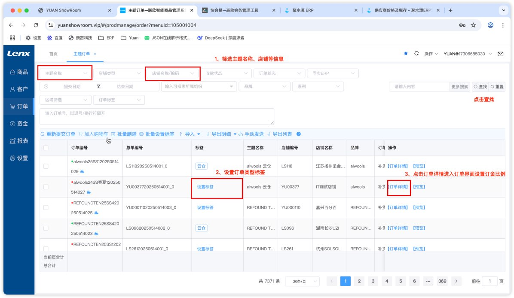
▲ 联欣订单审核界面
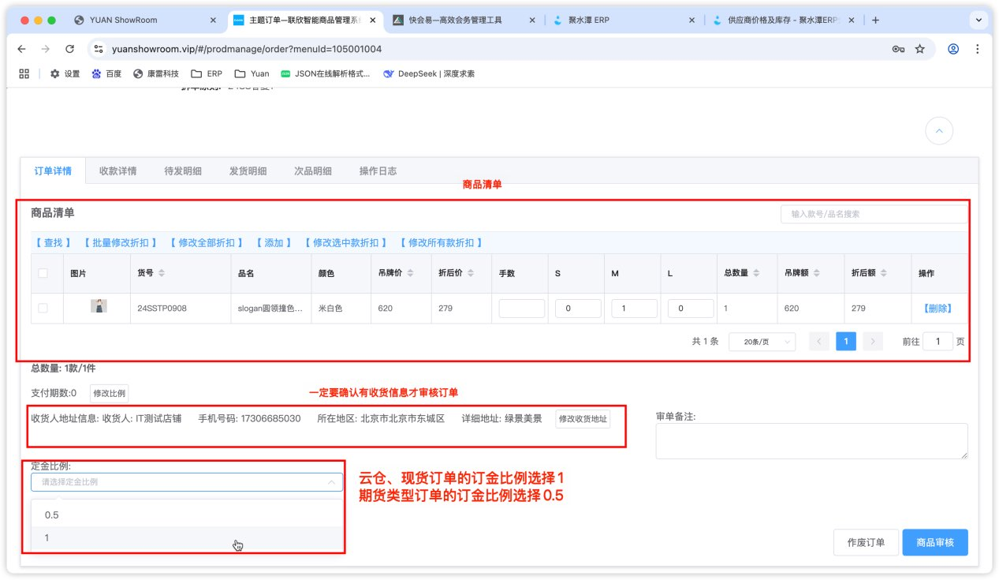
▲ 订单详情界面
2. 康雷系统总流程
流程方向：联欣审核通过 → 同步至康雷生成渠道订单与出货指令。云仓由市场部做回款并直接转发货；现货/期货经商品部截单转采购后，市场部负责回款，商品部负责转发货。
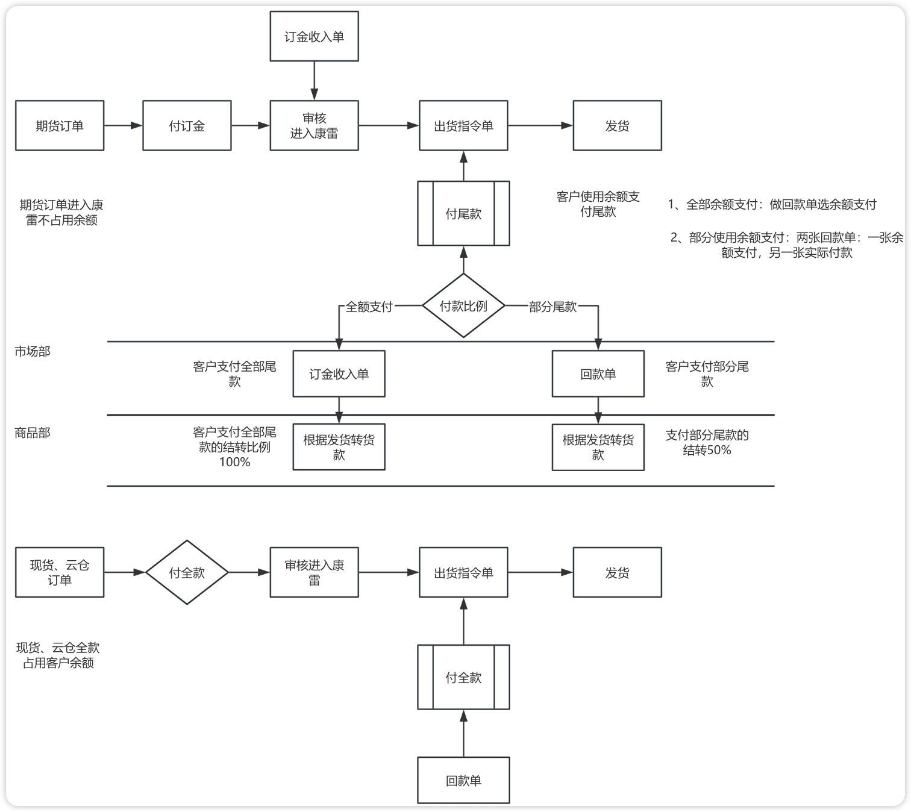
▲ 总体流程示意图
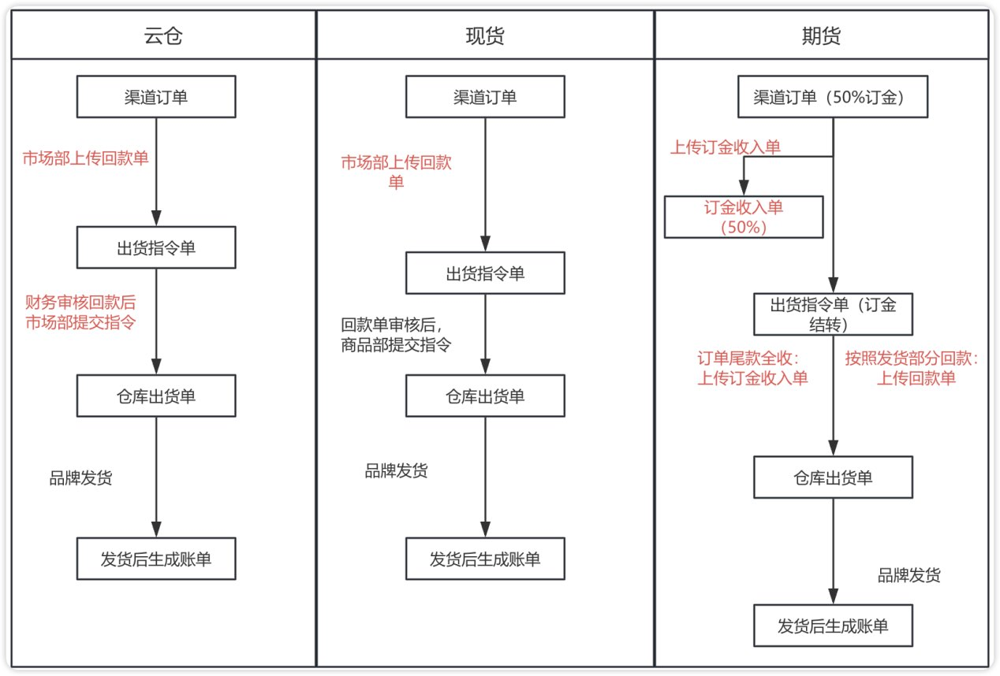
▲ 单据流程图
3. 云仓、现货、期货订单操作对比
| 对比维度 | 云仓 | 现货 | 期货 |
|---|---|---|---|
| 订单审核后 | 同步至康雷，生成渠道订单与出货指令单 | 同步至康雷，等待商品部截单 | 同步至康雷，等待商品部截单转采购 |
| 发货指令提交人 | 市场部（确认回款后直接提交） | 商品部（截单转采购后统一提交） | 商品部（收到尾款且财务审核通过后提交） |
| 市场部回款操作 | 对自动生成的回款单进行编辑、上传凭证、提交自行审核 | 对自动生成的回款单进行编辑、上传凭证、提交财务审核 | 收到订金时编辑订金收入单；收到尾款时操作转回款（全额一次，多次分笔） |
| 市场部核心职责 | 检查渠道订单 → 做回款单 → 提交出货指令单 | 仅做回款单，不接触发货指令 | 管理订金与尾款回款，涉及余额转入/混合支付/余额充值 |
| 常见特殊操作 | 订单取消需删除全部三个单据 | — | 使用余额支付、余额不足混合支付、余额充值 |
| 关键提醒 | 回款单信息填写不规范将影响发货时效 | 市场部无需操作转发货 | 严禁私自沟通退换货，尾款收齐后由商品部转发货 |
4. 云仓订单操作流程
责任人：市场部
-
检查渠道订单：确认订单信息无误。
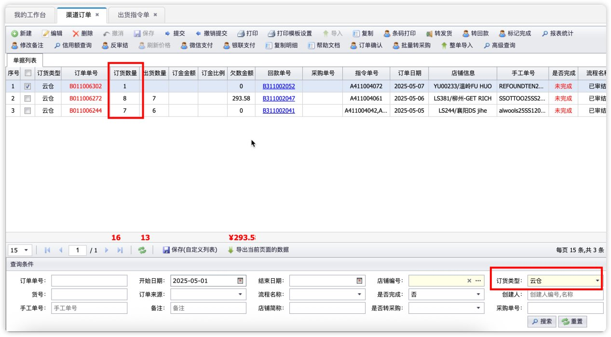
▲ 渠道订单检查界面
-
回款登记：
在康雷找到对应回款单，编辑并上传付款凭证、备注后保存，提交给自己账号审核（云仓类型由提交人自行审核，无需财务介入）。
必填/必上传项：
项目 说明 客户付款方式 如银行转账、微信、支付宝等 收款金额 实际收到的款项金额 付款凭证 截图或电子回单，必须清晰完整 以上信息填写不规范将影响发货时效，请务必仔细核对。
▲ 回款单填写示例
含运费/税费时需做应收费用单冲减回款金额须与订单金额一致，若回款包含了运费或税费，多余部分会自动转入客户余额。因此回款登记后，需在对应渠道订单下制作应收费用单冲减运费、税费，确保回款金额与订单金额一致：
- 进入康雷对应渠道订单界面，点击【增加费用】
- 制作应收费用单，填写费用类型（运费/税费）、金额
- 保存后回款金额即与订单金额匹配

▲ 渠道订单界面 - 增加费用操作
-
提交出货指令单：审核通过后，核对出货指令单中的地址等信息，确认无误后提交，品牌即可发货。
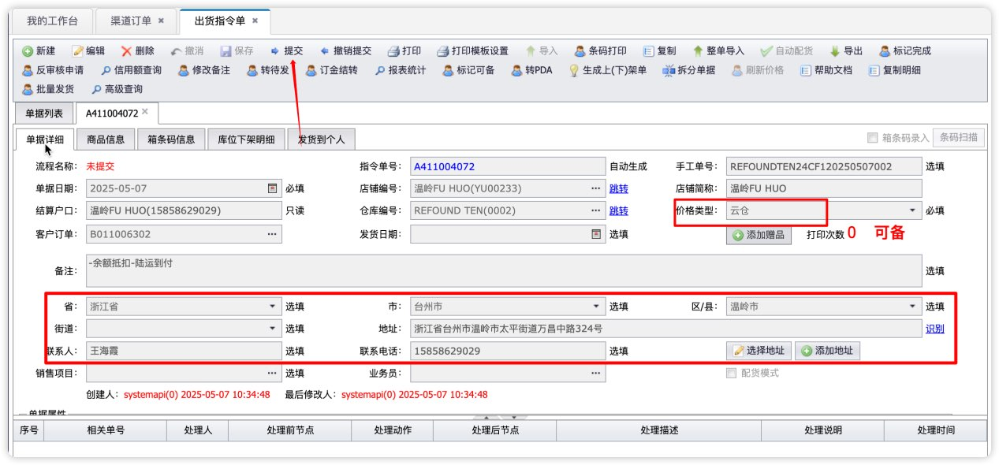
▲ 出货指令单提交
5. 现货订单操作流程
责任人：市场部（回款环节）
现货完整链路：联欣审核通过 → 同步至康雷 → 商品部在截单日统一截单并转采购 → 市场部做回款登记 → 商品部提交出货指令 → 品牌发货
市场部职责：仅进行回款登记，无需操作转发货。
5.1 回款登记操作
操作步骤与云仓回款登记完全一致，参照 第4节 云仓回款登记 操作即可。
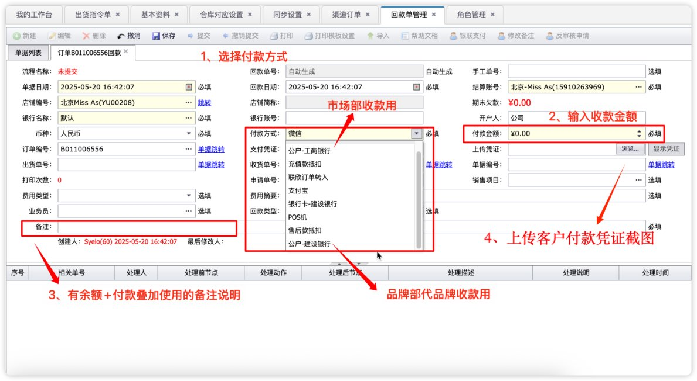
▲ 现货回款单编辑界面
6. 期货订单操作流程
责任人：市场部（回款环节）
商品部在截单日统一截单并转采购；品牌生产完毕且客户尾款收齐时，市场部操作回款，商品部再转发货并提交出货指令单。
6.1 期货订金处理
- 通过渠道订单号查找到对应的订金收入单号，点击编辑，选择付款方式，保存并提交。
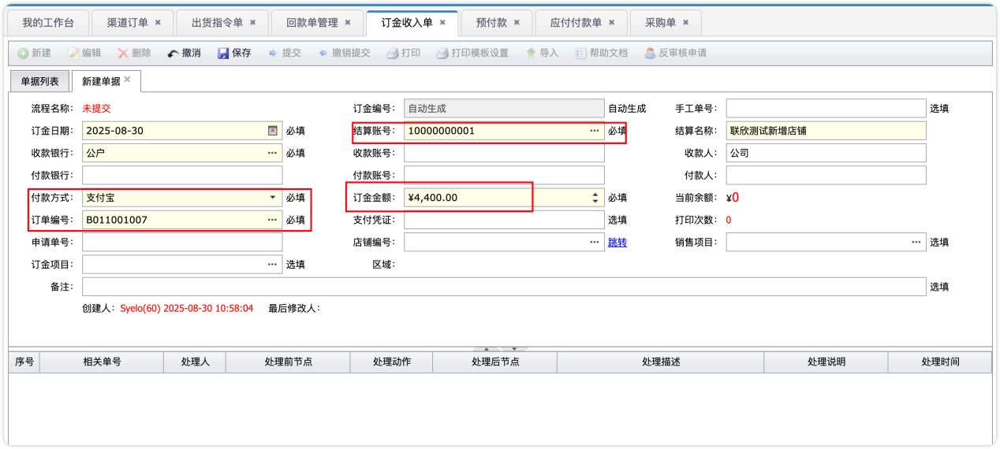
▲ 期货订金处理 - 订金收入单编辑
6.2 尾款处理
无论整单尾款还是部分尾款，统一使用转回款操作：
- 找到对应订单，点击转回款，选择客户付款方式、填写收款金额、备注，上传付款凭证后提交。
- 全额回款：点击一次转回款即可。
- 多次回款：每次收到款项时分别点击转回款、上传对应凭证。
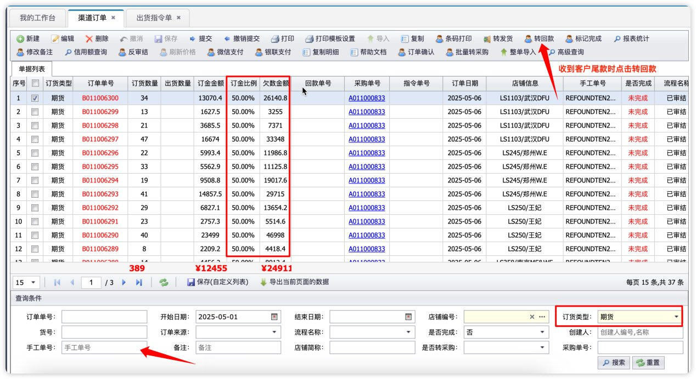
▲ 尾款处理 - 转回款操作界面
6.3 使用余额支付
- 余额充足（整单使用余额）：勾选对应渠道订单，点击【余额转入】→ 选择客户余额账号（注意品牌余额区分）→ 输入余额支付额度 → 上传余额使用截图 → 保存提交。
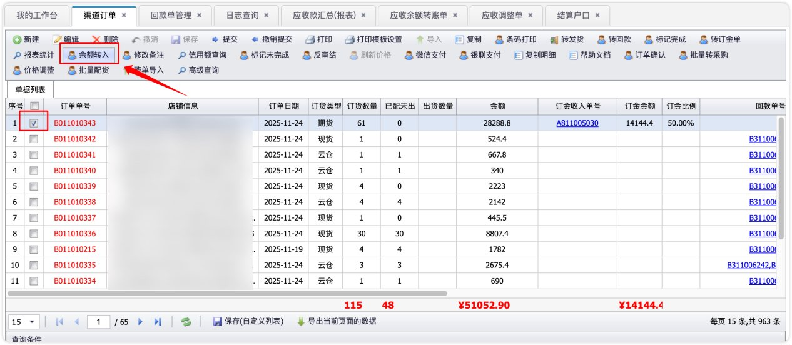
▲ 整单余额转入操作示例
- 余额不足（混合支付）：余额部分做【余额转入】抵扣单，现金支付部分做回款单（即一张回款单 + 一张余额转账单）。
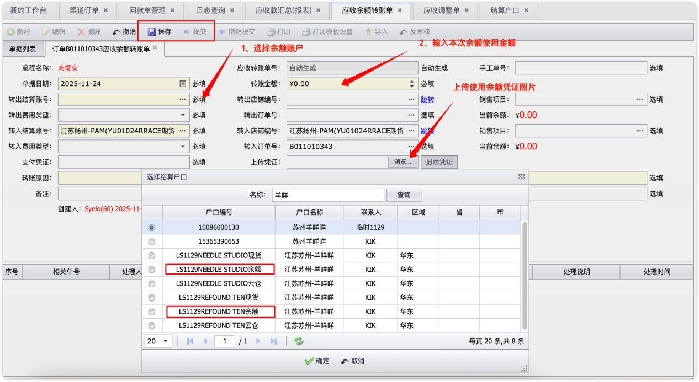
▲ 使用余额支付 - 余额转入界面
6.4 余额充值
- 新建回款单，选择对应的客户品牌余额账号（例如：YEE SILS089 余额对应 YEE S 品牌），填写支付方式、充值金额、上传凭证，保存并提交财务审核。
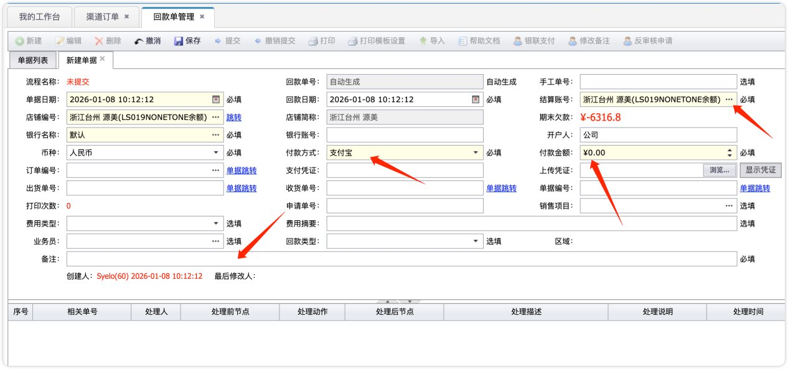
▲ 余额充值操作界面
7. 客户退换货处理
7.1 退换货判断流程

▲ 客户退换货处理示例
8. 单据取消处理
适用范围：云仓订单取消、使用余额支付的订单取消等场景均适用。
-
云仓未发货取消：
- 客户款项需退还：删除康雷生成的三张单据——【出货指令单】【回款单】【渠道订单】。
- 客户款项转入售后款：仅删除【出货指令单】，并通知商品部将对应订单标记为完成。

▲ 云仓未发货取消操作示例
-
使用余额支付的订单取消：删除【出货指令单】【渠道订单】，然后删除对应订单的回款单和退款单（通过应收余额转账单号来查找关联的回款单与退款单）。

▲ 使用余额支付的订单取消操作示例